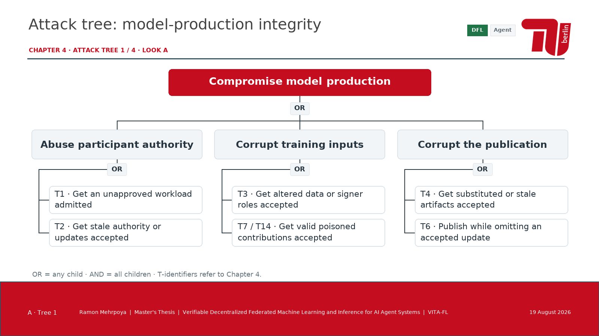

Neue Fassung: B auf hellem Grund mit sechs vertieften Bäumen
Vier Attack Trees · drei Looks
Aus den Bedrohungen T1–T14 in Kapitel 4 abgeleitete Zielzerlegungen. OR bedeutet alternative Wege, AND gemeinsam erforderliche Bedingungen. Keine Darstellung nachgewiesener Schwachstellen oder erfolgreicher Angriffe.
ThemaLook
Diesen Look als PowerPoint öffnen (4 Bäume)
Hauptpräsentation und Kapitel 4 bleiben unverändert. Alle Diagramme sind native, editierbare PowerPoint-Objekte. Exakte Quellen und logische Abgrenzungen stehen in den Sprechernotizen.